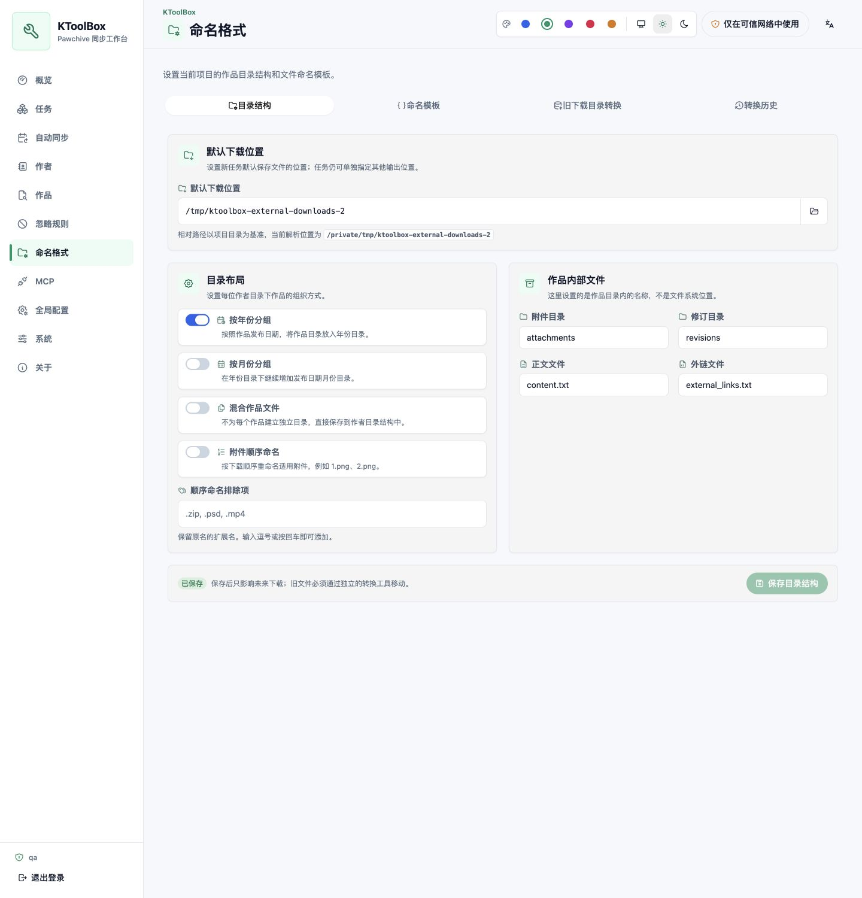
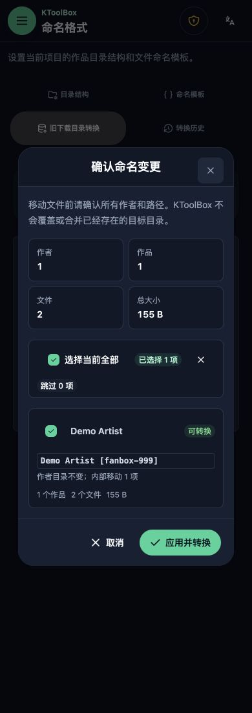
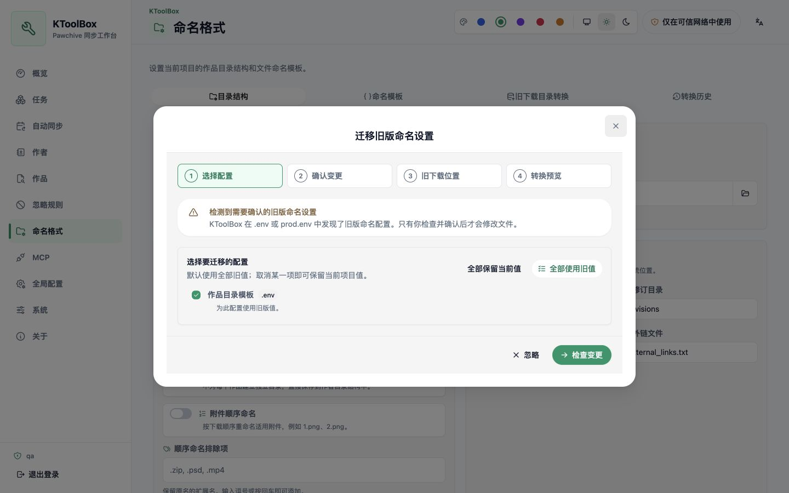

이름 형식¶
KToolBox v1의 이름 설정은 프로젝트별로 관리됩니다. CLI와 WebUI는 ktoolbox.toml의 같은 [naming] 섹션을 사용하며, 이름 필드는 더 이상 전역 dotenv 설정에서 편집하지 않습니다.
디렉터리 구조 설정¶
WebUI의 이름 형식 페이지에서 다음을 설정할 수 있습니다.
- 크리에이터, 작품, 리비전, 연도 및 월 디렉터리 템플릿
- 기본 파일(표지)과 첨부 파일 템플릿
- 작품 내부의 첨부, 리비전, 본문 및 외부 링크 이름
- 연/월 그룹, 작품 파일 혼합 및 첨부 순차 이름
Pawchive가 읽기 어려운 저장소 이름을 반환하는 경우가 많으므로 첨부 파일 순차 이름은 기본으로 활성화됩니다. 원래 파일 이름에 의미가 있어 보존해야 할 때만 비활성화하세요.
템플릿에는 필드 옆에 표시되는 {creator_name}, {creator_id}, {service}, {title}, {post_id}, {revision_id}, {year}, {month} 같은 변수만 사용할 수 있습니다. 경로 구분자, 상위 경로 이동, 알 수 없는 변수 및 안전하지 않은 이름은 스캔 전에 거부됩니다.
**디렉터리 구조**와 **이름 템플릿**에는 각각 저장 버튼이 있습니다. 저장한 설정은 이후 다운로드에 즉시 적용되지만 기존 파일을 자동으로 이동하지 않습니다.
**기본 다운로드 위치**도 프로젝트 설정입니다. 기본값은 downloads이며 상대 경로는 프로젝트 루트를 기준으로 해석하고 프로젝트 밖의 절대 경로도 사용할 수 있습니다. 작업의 명시적 출력, 자동 동기화 계획의 명시적 출력, 프로젝트 기본값 순서로 적용합니다. 생성된 작업에는 해석된 절대 경로가 고정되므로 나중에 기본값을 바꿔도 기존 작업은 이동하지 않습니다.

이전 다운로드 위치 변환¶
기존 콘텐츠를 저장된 형식으로 바꿀 때만 별도의 이전 다운로드 변환 탭을 사용합니다. 이전 위치를 추가하고 스캔하세요. 이 위치는 변환 원본이며 이후 작업의 다운로드 대상이 아닙니다.
변환기는 언제든 사용할 수 있으며 두 가지 원본 모드를 제공합니다. **프로젝트 기록**에서는 저장된 이름 버전을 여러 개 선택할 수 있어 한 다운로드 위치에 여러 세대의 구조가 섞인 경우에도 대응합니다. **설정 붙여넣기**에서는 이전 .env 이름 키, 전체 ktoolbox.toml, [naming] 테이블 또는 헤더 없는 이름 조각을 분석할 수 있습니다. 구문 강조 편집기는 예시와 필드별 오류를 표시하며 붙여 넣은 원문은 메모리에서만 분석되고 브라우저 저장소, 로그, 이벤트 또는 변환 기록에 저장되지 않습니다. 두 모드 모두 현재 프로젝트 이름 버전을 읽기 전용 대상으로 사용하며 프로젝트 설정을 덮어쓰지 않습니다.
스캔은 파일 시스템을 직접 읽고 작업 기록에만 의존하지 않으며 Pawchive에도 연결하지 않습니다. 크리에이터 디렉터리 신원, creator-indices.ktoolbox, post.json을 사용하고 선택 위치 밖으로 나가는 심볼릭 링크를 따르지 않습니다.
미리보기에는 크리에이터별 이전/새 경로, 작품 수, 파일 수, 전체 크기, 건너뜀 및 충돌이 표시됩니다. 안전하게 변환 가능한 크리에이터가 모두 기본 선택됩니다.

KToolBox는 대상을 덮어쓰거나 합치지 않습니다. 오래된 미리보기, 설정 변경, 관련 활성 작업, 중복 대상 또는 파일 시스템 변경이 있으면 다시 스캔해야 합니다.
변환 및 복구¶
KToolBox는 선택한 이동을 영구 백그라운드 작업으로 실행합니다. **일시 중지**는 현재 원자적 파일 작업이 끝난 뒤 상태를 유지하고, **계속**하기 전에 설정, 파일 지문, 충돌 및 여유 공간을 다시 검사합니다. **취소**는 완료된 이동을 역순으로 되돌립니다. 쓰기 실패나 프로세스 중단도 안전하게 롤백됩니다.
진행률과 기록은 .ktoolbox/webui.sqlite3에 저장됩니다. 성공하면 임시 작업 로그를 지우고 기록은 수동 삭제할 때까지 보존합니다. 비어 있는 이전 디렉터리는 제거하지만 관련 없는 파일은 삭제하지 않습니다.
최초 시작 마이그레이션¶
.env 또는 prod.env에서 이전 이름 키가 감지될 때만 마이그레이션 마법사가 표시됩니다. 시작 시에는 감지와 터미널 경고만 수행하며 파일을 변경하지 않습니다. 로그인 후 마법사는 다음을 수행합니다.
- 출처, 이전 값, 현재 프로젝트 값을 표시
- 이전 값을 기본 선택하되 항목별로 현재 값을 유지할 수 있게 함
- 프로젝트 설정과 dotenv의 정확한 변경 사항을 미리 표시
- 확인 후
.ktoolbox/migrations/project-naming-v2/에 백업하고ktoolbox.toml기록과 이전 키 제거를 원자적으로 수행 - 설정 마이그레이션 뒤 별도의 이전 디렉터리 변환 단계 제공

닫기나 **무시**는 현재 대화상자만 닫습니다. 이전 키가 남아 있으면 새로 고침하거나 다시 로그인할 때 다시 표시됩니다. 설정 마이그레이션과 디렉터리 변환은 별도 단계입니다. 이전 위치를 확인한 뒤 명시적으로 스캔해야 하며 도구를 여는 것만으로는 스캔이나 이동을 시작하지 않습니다.
CLI도 프로젝트 이름 설정을 사용합니다. 이전 프로젝트는 WebUI에서 백업과 원자적 마이그레이션을 확인하세요. 프로세스 환경에만 있는 이전 값은 삭제할 수 없으므로 이름 설정에서는 무시하고 시작 환경에서 제거될 때까지 경고합니다.
관련 가이드¶
- 이름 설정 페이지와 변환 절차는 WebUI 가이드를 참조하세요.
- 전역 네트워크와 다운로더 설정은 설정 가이드를 사용하세요.
- 기존 프로젝트를 업그레이드할 때는 v1 마이그레이션 가이드를 따르세요.